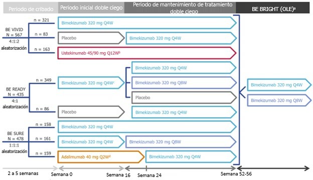
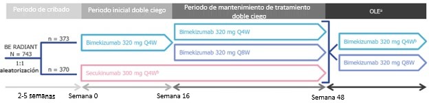

Hechos clave — Bimekizumab en psoriasis en placas de moderada a severa
Bimekizumab (BKZ; Bimzelx) demostró tasas de respuesta significativamente superiores al placebo para PASI 90 e IGA 0/1 en la semana 16 en los estudios BE VIVID, BE READY y BE SURE, y superioridad sobre ustekinumab (UST) en BE VIVID y sobre adalimumab (ADA) en BE SURE. En BE RADIANT, BKZ fue superior a secukinumab (SEC) para PASI 100 en la semana 16 (61.7% vs. 48.9%; p < 0.001). En BE BRIGHT (4 años), el 73.0% de los respondedores PASI 100 a la semana 16 mantuvieron el aclaramiento cutáneo completo. La EAIR de TEAEs fue 170.5/100 PY durante 4 años, sin nuevos hallazgos de seguridad.
Preguntas y respuestas clave AEO
¿BKZ es superior al placebo en PSO en placas?
Sí. En los estudios BE VIVID, BE READY y BE SURE, BKZ fue estadísticamente superior al placebo para los criterios de valoración coprimarios PASI 90 e IGA 0/1 en la semana 16 (p < 0.0001, NRI).
¿Cuánto tiempo mantiene la respuesta BKZ?
Durante 4 años en BE BRIGHT: el 73.0% de respondedores PASI 100 a semana 16 mantuvieron aclaramiento; el 87.9% mantuvo PASI 90; el 89.5% mantuvo IGA 0/1; el 82.9% mantuvo DLQI 0/1 (mNRI).
Resumen
Información para Prescribir (IPP)
La IPP contiene información relevante sobre el uso de bimekizumab (BKZ; Bimzelx) en pacientes con psoriasis en placas (PSO) de moderada a severa.1 Esta información se encuentra más detallada en las fuentes publicadas que se utilizan en este documento.
Datos Publicados
-
BE VIVID fue un estudio de fase 3 controlado con placebo y ustekinumab (UST) de 52 semanas.a Se lograron tasas de respuesta significativamente más altas (p < 0.0001) para los criterios de valoración coprimarios de PASI 90b e IGA 0/1c en la semana 16 con BKZ vs. placebo y vs. UST (85% vs. 5% y 50%, respectivamente, para PASI 90; y 84% vs. 5% y 53%, respectivamente, para IGA 0/1; imputación de no respondedor [NRI]) [Click aquí para detalles].2
-
BE READY fue un estudio de fase 3 controlado con placebo de 56 semanas de duración que incluyó un periodo de retirada aleatorizado. Se obtuvieron tasas de respuesta significativamente más altas para los criterios coprincipales de PASI 90 e IGA 0/1 en la semana 16 con BKZ que con placebo (90.8% y 92.6% vs. 1.2% y 1.2%, respectivamente; p < 0.0001, NRI) [Click aquí para detalles].3
-
BE SURE fue un estudio de fase 3 de 56 semanas que incluyó un período controlado con adalimumab (ADA) de 16 semanas. Se obtuvieron tasas de respuesta significativamente más altas para los criterios coprincipales de PASI 90 e IGA 0/1 en la semana 16 con BKZ que con ADA (86.2% y 85.3% vs. 47.2% y 57.2%, respectivamente; p < 0.001, NRI) [Click aquí para detalles].4
-
BE RADIANT fue un estudio de fase 3b de 48 semanas, controlado con secukinumab (SEC). Se obtuvieron tasas de respuesta significativamente más altas para el criterio principal de PASI 100b en la semana 16 con BKZ que con SEC (61.7% vs. 48.9%; p < 0.001, NRI) [Click aquí para detalles].5
-
El mantenimiento de la eficacia de BKZ durante 4 años se evaluó en BE BRIGHT, la extensión de etiqueta abierta (OLE; open-label extension) de BE VIVID, BE READY y BE SURE. En la semana 16, de 989 pacientes aleatorizados para recibir BKZ al inicio (datos agrupados de los estudios de fase 3), 620 (62.7%) alcanzaron una respuesta PASI 100 (aclaramiento cutáneo completo). De estos, 503 ingresaron en la OLE y el 73.0% de estos pacientes mantuvieron el aclaramiento cutáneo durante 4 años. Se evaluó el mantenimiento de las respuestas PASI 90, IGA 0/1 y DLQI 0/1d durante 4 años en pacientes que respondieron hasta el año 1: el 87.9% de 699 pacientes mantuvo una respuesta PASI 90, el 89.5% de 685 pacientes mantuvo una respuesta IGA 0/1 y el 82.9% de 621 pacientes mantuvo una respuesta DLQI 0/1 (imputación de no respondedor modificada [mNRI; modified nonresponder imputation]) [Click aquí para detalles].6,7
-
Durante 4 años, en los estudios BE VIVID, BE READY, BE SURE y BE RADIANT y sus OLE, BKZ fue bien tolerado, sin observarse nuevos hallazgos de seguridad. La tasa de incidencia ajustada a la exposición (EAIR; exposure-adjusted incidence rate) de eventos adversos emergentes del tratamiento (EAET; treatment-emergent adverse events) fue de 170.5/100 años-paciente (PY; patient-years); la incidencia disminuyó anualmente con una exposición más prolongada a BKZ: 230.9/100 PY en el primer año y 99.9/100 PY en el cuarto año. Los TEAEs notificados con mayor frecuencia fueron nasofaringitis, candidiasis oral e infección de las vías respiratorias superiores [Click aquí para detalles].8
b PASI 90/100 = ≥ 90/100% de mejora con respecto al valor inicial en el Índice de Área y Gravedad de Psoriasis.
c IGA 0/1 = puntuación de 0 (aclaramiento total) o 1 (casi aclaramiento total) en la Evaluación Global del Investigador, en una escala de 5 puntos.
d DLQI 0/1 = puntuación de 0 o 1 (sin efecto de la PSO en la calidad de vida) en el Índice de Calidad de Vida en Dermatología, en una escala de 30 puntos.
Respuesta Detallada
Datos Publicados
Generalidad de los Estudios
La eficacia y seguridad de BKZ en pacientes adultos con PSO en placa de moderada a severa se evaluaron en tres estudios multicéntricos, aleatorizados, doble ciego, controlados con placebo y/o activo de fase 3 (BE VIVID, BE READY y BE SURE) y un estudio de fase 3b (BE RADIANT).2–4,5 La eficacia, seguridad y tolerabilidad a largo plazo de BKZ se están evaluando en los estudios de OLE: BE BRIGHT y la OLE del estudio BE RADIANT. Los diseños de los estudios se muestran en el Apéndice.
Para ser elegibles para los estudios clínicos de Fase 3 y 3b, los pacientes debían tener ≥ 18 años con diagnóstico de PSO en placas de moderada a severa (puntuación PASIe absoluta ≥ 12, superficie corporal afectada [BSA] ≥ 10% y puntuación IGA ≥ 3 en una escala de 5 puntos) y ser candidatos para terapia sistémica o fototerapia. Las características demográficas y de la enfermedad al inicio fueron similares en todos los estudios; los detalles se muestran en el Apéndice.2–4,5
Resultados de Eficacia
Estudios Individuales
BE VIVID
BE VIVID fue un estudio de fase 3, multicéntrico, aleatorizado, doble ciego, controlado con placebo y UST, de 52 semanas, diseñado para evaluar la eficacia y la seguridad de BKZ en comparación con placebo y UST en pacientes adultos con PSO en placas de moderada a severa. Los pacientes recibieron BKZ 320 mg Q4W, placebo o UST.f Los pacientes del grupo placebo cambiaron a BKZ 320 mg Q4W en la semana 16. El diseño del estudio se muestra en el Apéndice.2
BKZ fue estadísticamente superior al placebo en todos los criterios de valoración primarios y secundarios clasificados (p < 0.0001).2
Tabla 1 — Descripción General de los Resultados de Eficacia en BE VIVID (NRI) (Adaptado).a,2 |
|||
| Criterios de Valoración de Eficacia | Placebo (n = 83) | BKZ 320 mg Q4W (n = 321) | UST (n = 163) |
|---|---|---|---|
| Pacientes Que Lograron Respuesta, n (%) | |||
| Semana 4 | |||
| PASI 75 | 2 (2) | 247 (77) | 25 (15) |
| Semana 16 | |||
| PASI 90b | 4 (5) | 273 (85) | 81 (50) |
| PASI 100 | 0 | 188 (59) | 34 (21)c |
| IGA 0/1d,b | 4 (5) | 270 (84) | 87 (53) |
| Semana 52 | |||
| PASI 90 | NA | 263 (82) | 91 (56) |
| PASI 100 | NA | 207 (65) | 62 (38)c |
| IGA 0/1 | NA | 251 (78) | 99 (61) |
|
a Todos fueron estudios multicéntricos, aleatorizados, doble ciego y de
grupos paralelos. b PASI 90/100 = ≥ 90/100% de mejora con respecto al valor inicial en el Índice de Área y Gravedad de Psoriasis. c p nominal < 0.0001 vs. UST. d IGA 0/1 = puntuación de 0 (aclaramiento total) o 1 (casi aclaramiento total) en la Evaluación Global del Investigador, en una escala de 5 puntos. Criterios de valoración coprincipales: respuestas PASI 90 e IGA 0/1 en la semana 16 con BKZ 320 mg Q4W vs. placebo. p < 0.0001 entre los grupos de tratamiento para todos los resultados y puntos temporales en las comparaciones de BKZ vs. placebo y BKZ vs. UST, a menos que se especifique lo contrario. BKZ = bimekizumab; IGA = Evaluación Global del Investigador; NA = no aplicable; NRI = imputación de no respondedor; PASI 75/90/100 = ≥ 75/90/100% de mejora en el Índice de Área y Gravedad de Psoriasis; Q4W = cada 4 semanas; UST = ustekinumab. |
|||
BE READY
BE READY fue un estudio de fase 3, multicéntrico, aleatorizado, doble ciego y controlado con placebo de 56 semanas, con un período de retirada aleatorizado a la semana 16.3 El diseño se muestra en el Apéndice.
Tabla 2 — Descripción General de los Resultados de Eficacia en BE READY (NRI) (Adaptado).3 |
||
| Criterios de Valoración de Eficacia | Total BKZa (n = 349) | Placebo (n = 86) |
|---|---|---|
| Pacientes Que Lograron Respuesta, n (%)b | ||
| Semana 4 | ||
| PASI 75 | 265 (76) | 1 (1) |
| Semana 16 | ||
| PASI 90c | 317 (91) | 1 (1) |
| PASI 100 | 238 (68) | 1 (1) |
| IGA 0/1c | 323 (93) | 1 (1) |
| Q4W durante todo el tratamiento (n = 106) | Q4W/Q8Wd (n = 100) | |
| Pacientes Que Lograron Respuesta, % | ||
| Semana 56 | ||
| PASI 90 | 86.8 | 91.0 |
| PASI 100 | 70.8 | 83.0 |
| IGA 0/1 | 86.8 | 90.0 |
|
a Todos los pacientes del grupo BKZ recibieron BKZ 320 mg Q4W hasta
la semana 16. b p < 0.0001 para todas las comparaciones de BKZ frente a placebo. c Criterio de valoración coprincipal. d Incluye pacientes que recibieron BKZ Q4W hasta la semana 16 y Q8W a partir de entonces. BKZ = bimekizumab; IGA 0/1 = puntuación de 0 (aclaramiento total) o 1 (casi aclaramiento total) en la Evaluación Global del Investigador; NRI = imputación de no respondedor; PASI 75/90/100 = ≥ 75/90/100% de mejora respecto al valor inicial; QXW = cada X semanas. |
||
Un total de 105 pacientes fueron reasignados al grupo de retirada del tratamiento; de estos, 67 recayeron (PASI < 75). La mediana de tiempo hasta la recaída fue de 28 semanas (IC 95%, 24–32 semanas). Tras la recaída, los pacientes pudieron entrar en un grupo de escape de etiqueta abierta para recibir BKZ 320 mg Q4W durante 12 semanas.3,12
Tabla 3 — Respuestas Tras el Reinicio de BKZ en Pacientes Que Recayeron Durante la Retirada del Tratamiento (NRI).a,12 |
|||
| Punto de Tiempo Después del Reinicio | PASI 75 | PASI 90 | DLQI 0/1 |
|---|---|---|---|
| BKZ/Placebo/BKZ (n = 67) | Pacientes Que Lograron Respuesta, % | ||
| Inicio | 0 | 0 | NR |
| Semana 4 | 89.6 | 65.7 | 58.2 |
| Semana 12 | 94.0 | 88.1 | 82.1 |
|
a Durante el período de escape de 12 semanas, los pacientes recibieron BKZ
320 mg Q4W. BKZ = bimekizumab; DLQI 0/1 = puntuación de 0 o 1 en el Índice de Calidad de Vida en Dermatología; NR = no informado; NRI = imputación de no respondedor; PASI 75/90 = ≥ 75/90% de mejora; Q4W = cada 4 semanas. |
|||
BE SURE
BE SURE fue un estudio de fase 3, multicéntrico, aleatorizado, doble ciego y de grupos paralelos de 56 semanas con un período inicial de 16 semanas controlado con ADA.g,4 El diseño se muestra en el Apéndice.
Tabla 4 — Resumen de los Resultados de Eficacia en BE SURE (NRI) (Adaptado).4 |
|||
| Criterios de Valoración de Eficacia | Total BKZa (n = 319) | ADA (n = 159) | Diferencia de Riesgo Ajustadab pp (95% CI) |
|---|---|---|---|
| Pacientes Que Lograron Respuesta, n (%) | |||
| Semana 4 | |||
| PASI 75 | 244 (76.5) | 50 (31.4) | 44.8 (36.3–53.4) |
| Semana 16 | |||
| PASI 90c | 275 (86.2) | 75 (47.2) | 39.3 (30.9–47.7) |
| PASI 100 | 194 (60.8) | 38 (23.9) | 37.0 (28.6–45.3) |
| IGA 0/1c | 272 (85.3) | 91 (57.2) | 28.2 (19.7–36.7) |
| Semana 24 | |||
| PASI 90 | 273 (85.6) | 82 (51.6) | 33.9 (25.4–42.4) |
| PASI 100 | 213 (66.8) | 47 (29.6) | 37.1 (28.5–45.7) |
| IGA 0/1 | 276 (86.5) | 92 (57.9) | 28.7 (20.2–37.1) |
| Q4W todo el estudio (n = 158) | Q4W/Q8Wa (n = 161) | ADA/BKZ Q4Wd (n = 159) | |
| Pacientes Que Lograron Respuesta, % — Semana 56 | |||
| PASI 90 | 84.8 | 82.6 | 81.8 |
| PASI 100 | 72.2 | 70.2 | 66.7 |
| IGA 0/1 | 82.3 | 83.2 | 80.5 |
|
a Incluye pacientes que recibieron BKZ Q4W hasta la semana 16 y Q8W a
partir de entonces, así como pacientes que recibieron BKZ a lo largo de Q4W. b p < 0.001 entre los grupos de tratamiento para todos los resultados. c Criterios de valoración coprincipales: respuestas PASI 90 e IGA 0/1 en la semana 16 con BKZ 320 mg Q4W vs. ADA. d Incluye pacientes que recibieron ADA hasta la semana 24 y BKZ Q4W a partir de entonces. ADA = adalimumab; BKZ = bimekizumab; CI = intervalo de confianza; IGA 0/1 = Evaluación Global del Investigador; NRI = imputación de no respondedor; PASI 75/90/100 = ≥ 75/90/100%; QXW = cada X semanas. |
|||
BE RADIANT
BE RADIANT fue un estudio de fase 3b, aleatorizado, doble ciego, controlado con SECh y de grupos paralelos que evaluó la eficacia y la seguridad de BKZ en comparación con SEC en pacientes adultos con PSO en placa de moderada a severa.5 El diseño se muestra en el Apéndice.
Tabla 5 — Resumen de los Resultados de Eficacia de BE RADIANT (NRI) (Adaptado).5 |
|||
| Criterios de Valoración de Eficacia | BKZa (n = 373) | SEC (n = 370) | Diferencia de Riesgo Ajustadab pp (95% CI) |
|---|---|---|---|
| Pacientes Que Lograron Respuesta, n (%) | |||
| Semana 4 | |||
| PASI 75 | 265 (71.0) | 175 (47.3) | 23.7 (17.0–30.4) |
| Semana 16 | |||
| PASI 90 | 319 (85.5) | 275 (74.3) | 11.3 (5.8–16.8) |
| PASI 100c | 230 (61.7) | 181 (48.9) | 12.7 (5.8–19.6) |
| IGA 0/1d | 319 (85.5) | 291 (78.6) | 7.0 (1.6–12.4) |
| Semana 48 | |||
| PASI 100 | 250 (67.0) | 171 (46.2) | 20.9 (14.1–27.7) |
| BKZ Q4W/Q4W (n = 147)e vs. SEC (n = 354)f | 108 (73.5) | 171 (48.3) | 26.5 (17.9–35.1) |
| BKZ Q4W/Q8W (n = 215)g vs. SEC (n = 354)f | 142 (66.0) | 171 (48.3) | 17.3 (9.3–25.3) |
|
a Incluye pacientes que recibieron BKZ Q4W durante todo el tratamiento y
aquellos que cambiaron a Q8W entre las semanas 16 y 48. b p < 0.001 entre los grupos de tratamiento para todos los resultados, a menos que se especifique lo contrario. c Criterio de valoración principal. d Valor p no informado. e Pacientes tratados con BKZ Q4W entre las semanas 0 y 48. f Pacientes que completaron el período inicial (semanas 0–16) y continuaron con SEC. g Pacientes tratados con BKZ Q4W entre las semanas 0–16 y BKZ Q8W entre las semanas 16–48. BKZ = bimekizumab; CI = intervalo de confianza; IGA 0/1 = Evaluación Global del Investigador; NRI = imputación de no respondedor; PASI 75/90/100 = ≥ 75/90/100% de mejora; QXW = cada X semanas; SEC = secukinumab. |
|||
Al finalizar el estudio, los pacientes pudieron participar en la OLE, en la que los pacientes tratados con BKZ continuaron el tratamiento con BKZ (n = 336) y los pacientes tratados con SEC cambiaron a BKZ (n = 318). En la semana 144 (semana 96 de la OLE), de los pacientes tratados con BKZ continuo cuyos datos estaban disponibles en el momento del análisis (casos observados [CO]; n = 283), el 76.0% alcanzó una respuesta PASI 100 y el 93.3% alcanzó una puntuación PASI absoluta ≤ 2.10
Mantenimiento de la Respuesta — OLE BE BRIGHT
El mantenimiento de la eficacia de BKZ a lo largo de 4 años se evaluó en BE BRIGHT, la OLE de BE VIVID, BE READY y BE SURE. Un total de 989 pacientes fueron aleatorizados para recibir BKZ al inicio en la fase 3; de estos, 620 (62.7%) alcanzaron PASI 100 en la semana 16. Un total de 503 (81.1%) ingresaron a BE BRIGHT.6
Tabla 6 — Mantenimiento de las Respuestas PASI Durante 4 Años en Pacientes Que Respondieron PASI 100 a la Semana 16 (mNRI) (Adaptado).6 |
||||||||
| Criterio de Valoración | BKZ Total — N = 503 | BKZ Q4W/Q8W — N = 147 | ||||||
|---|---|---|---|---|---|---|---|---|
| Año 1 | Año 2 | Año 3 | Año 4 | Año 1 | Año 2 | Año 3 | Año 4 | |
| Mantenimiento de la Respuesta, % | ||||||||
| PASI 75 | 99.2 | 99.0 | 97.7 | 96.2 | 100 | 99.3 | 97.9 | 95.2 |
| PASI 90 | 98.2 | 97.1 | 94.5 | 89.3 | 99.3 | 99.3 | 96.2 | 88.1 |
| PASI 100 | 89.3 | 85.6 | 80.7 | 73.0 | 93.6 | 88.3 | 81.9 | 76.7 |
| BKZ = bimekizumab; mNRI = imputación de no respondedor modificada; PASI 75/90/100 = ≥ 75/90/100% de mejora desde el inicio; QXW = cada X semanas. | ||||||||
Un total de 771 pacientes aleatorizados para recibir BKZ al inicio ingresaron a BE BRIGHT. Al inicio de la OLE, 699 (90.7%) y 583 (75.6%) pacientes presentaron respuestas PASI 90 y PASI 100, respectivamente; 685 (88.8%) presentaron respuestas IGA 0/1; y 621 (80.5%) presentaron respuestas DLQI 0/1. Los resultados sobre el mantenimiento de la eficacia con BKZ por año durante 4 años se presentan en la Tabla 7 (en el grupo total de BKZ) y la Tabla 8 (en pacientes que recibieron BKZ Q4W hasta la semana 16 y Q8W a partir de entonces).7
Tabla 7 — Mantenimiento de la Respuesta Durante 4 Años en el Grupo BKZ Total (Adaptado).a,7 |
||||
| Criterio de Valoración de Eficacia | BKZ Total (Análisis Agrupado) — N = 771 | |||
|---|---|---|---|---|
| Año 1 | Año 2 | Año 3 | Año 4 | |
| Respondedores n (%) [NRI] / Personas que respondieron al Año 1 que mantuvieron la respuesta, % [mNRI] | ||||
| PASI 90 | 699 (90.7) | 96.5/699 | 93.7/699 | 87.9/699 |
| PASI 100 | 583 (75.6) | 87.3/583 | 80.9/583 | 74.3/583 |
| IGA 0/1 | 685 (88.8) | 96.4/685 | 93.3/685 | 89.5/685 |
| DLQI 0/1d | 621 (80.5) | 92.4/621 | 88.3/621 | 82.9/621 |
|
a Incluye pacientes que recibieron BKZ 320 mg Q4W hasta la semana 16
y posteriormente Q4W o Q8W. d DLQI 0/1 = puntuación de 0 o 1 (sin efecto de PSO en la calidad de vida) en el Índice de Calidad de Vida en Dermatología, en una escala de 30 puntos. BKZ = bimekizumab; DLQI = Índice de Calidad de Vida en Dermatología; IGA 0/1 = Evaluación Global del Investigador; mNRI = imputación modificada de no respondedores; NRI = imputación de no respondedores; PASI 90/100 = ≥ 90/100% de mejora; PSO = psoriasis; QXW = cada X semanas. |
||||
Tabla 8 — Mantenimiento de la Respuesta Durante 4 Años en el Grupo BKZ Q4W/Q8W (Adaptado).a,7 |
||||
| Criterio de Valoración de Eficacia | BKZ Q4W/Q8W (Análisis Agrupado) — N = 197 | |||
|---|---|---|---|---|
| Año 1 | Año 2 | Año 3 | Año 4 | |
| Respondedores n (%) [NRI] / Personas que respondieron al Año 1 que mantuvieron la respuesta, % [mNRI] | ||||
| PASI 90 | 192 (97.5) | 97.8/192 | 95.6/192 | 88.5/192 |
| PASI 100 | 167 (84.8) | 87.9/167 | 82.4/167 | 77.8/167 |
| IGA 0/1 | 193 (98.0) | 96.2/193 | 95.3/193 | 93.0/193 |
| DLQI 0/1 | 168 (85.3) | 92.0/168 | 93.9/168 | 84.8/168 |
|
a Incluye pacientes que recibieron BKZ 320 mg Q4W hasta la semana 16
y posteriormente Q8W. BKZ = bimekizumab; DLQI = Índice de Calidad de Vida en Dermatología; IGA 0/1 = Evaluación Global del Investigador; mNRI = imputación modificada de no respondedores; NRI = imputación de no respondedores; PASI 90/100 = ≥ 90/100% de mejora; QXW = cada X semanas. |
||||
Resultados de Seguridad
Se realizó un análisis de seguridad agrupado de 4 años (estudios BE SURE, BE VIVID, BE READY y su OLE BE BRIGHT; y BE RADIANT de fase 3b y su OLE). Un total de 2186 pacientes recibieron ≥ 1 dosis de BKZ a lo largo de 4 años. La mediana de exposición fue de 1013 días; la exposición total fue de 6324.3 PY. En general, BKZ fue bien tolerado, sin nuevos hallazgos de seguridad.8
Tabla 9 — Resumen de TEAEs con BKZ a lo Largo de 4 Años (Adaptado).a,8 |
|||||
| TEAEb | Año 1 N = 2186 (2053.3 PY) | Año 2 N = 2013 (1904.3 PY) | Año 3 N = 1803 (1521.1 PY) | Año 4 N = 1309 (819.5 PY) | General N = 2186 (6324.3 PY) |
|---|---|---|---|---|---|
| EAIR (95% CI) | |||||
| Descripción General de Seguridad | |||||
| Cualquier TEAE | 230.9 (220.4–241.8) | 137.7 (130.5–145.2) | 107.1 (100.6–114.0) | 99.9 (91.5–108.8) | 170.5 (163.2–178.1) |
| TEAEs graves | 6.5 (5.5–7.8) | 5.9 (4.9–7.1) | 5.8 (4.6–7.1) | 5.6 (4.1–7.5) | 5.5 (4.9–6.2) |
| TEAEs que llevaron a la interrupción | 4.6 (3.7–5.6) | 2.3 (1.7–3.1) | 2.3 (1.6–3.2) | 1.1 (0.5–2.1) | 2.9 (2.5–3.3) |
| TEAEs severos | 6.0 (5.0–7.2) | 5.0 (4.1–6.2) | 4.8 (3.7–6.0) | 5.1 (3.7–6.9) | 4.8 (4.3–5.4) |
| Muertes | 0.3 (0.1–0.6) | 0.3 (0.1–0.7) | 0.5 (0.2–0.9) | 0.2 (0.0–0.9) | 0.3 (0.2–0.5) |
| TEAEs Más Frecuentes | |||||
| Nasofaringitis | 25.8 (23.5–28.3) | 13.2 (11.6–15.0) | 5.4 (4.3–6.7) | 5.9 (4.4–7.9) | 12.7 (11.7–13.8) |
| Candidiasis oral | 18.9 (16.9–21.0) | 10.7 (9.2–12.3) | 6.8 (5.6–8.3) | 5.4 (3.9–7.3) | 8.9 (8.1–9.7) |
| Infecciones del Tracto Respiratorio Superior | 10.4 (9.0–12.0) | 5.7 (4.7–6.9) | 3.7 (2.8–4.9) | 3.9 (2.6–5.5) | 5.7 (5.1–6.4) |
| TEAEs de Interés | |||||
| Infecciones fúngicas | 30.6 (28.0–33.3) | 18.8 (16.8–21.0) | 11.9 (10.2–13.8) | 8.6 (6.6–10.9) | 15.7 (14.6–16.9) |
| Infecciones por Candida | 22.2 (20.1–24.4) | 12.8 (11.2–14.6) | 7.8 (6.5–9.4) | 5.7 (4.1–7.6) | 10.4 (9.5–11.3) |
| Candidiasis oral | 18.9 (16.9–21.0) | 10.7 (9.2–12.3) | 6.8 (5.6–8.3) | 5.4 (3.9–7.3) | 8.9 (8.1–9.7) |
| Incrementos de ALT o AST > 3 × ULN | 2.6 (1.9–3.4) | 2.4 (1.7–3.2) | 1.9 (1.3–2.8) | 1.8 (1.0–3.0) | 1.9 (1.6–2.3) |
| > 5 × ULNc | 0.8 (0.5–1.3) | 0.3 (0.1–0.7) | 0.5 (0.2–1.0) | 0.6 (0.2–1.4) | 0.5 (0.4–0.7) |
| Reacciones en el sitio de inyección | 3.3 (2.5–4.2) | 1.1 (0.6–1.6) | 1.2 (0.7–1.9) | 0.4 (0.1–1.1) | 1.7 (1.4–2.0) |
| Infecciones graves | 1.7 (1.2–2.3) | 0.8 (0.5–1.4) | 1.4 (0.9–2.1) | 1.1 (0.5–2.1) | 1.3 (1.0–1.6) |
| Cáncerd | 0.4 (0.2–0.8) | 0.6 (0.3–1.1) | 0.7 (0.4–1.3) | 0.9 (0.3–1.8) | 0.6 (0.4–0.8) |
| MACE adjudicados | 0.5 (0.3–1.0) | 0.3 (0.1–0.7) | 0.6 (0.3–1.1) | 1.1 (0.5–2.1) | 0.6 (0.4–0.8) |
| IBD adjudicada | 0.3 (0.1–0.7) | 0.2 (0.0–0.5) | 0.1 (0.0–0.4) | 0.1 (0.0–0.7) | 0.2 (0.1–0.3) |
| SIB adjudicada | 0.1 (0.0–0.4) | 0.2 (0.0–0.5) | 0.1 (0.0–0.5) | 0.0 (0.0–0.0) | 0.1 (0.1–0.2) |
| Reacciones graves de hipersensibilidade | 0.1 (0.0–0.4) | 0.1 (0.0–0.4) | 0.0 (0.0–0.0) | 0.0 (0.0–0.0) | 0.1 (0.0–0.2) |
| Tuberculosis activa | 0.0 (0.0–0.0) | 0.0 (0.0–0.0) | 0.0 (0.0–0.0) | 0.0 (0.0–0.0) | 0.0 (0.0–0.0) |
|
a Datos agrupados de BE SURE, BE VIVID, BE READY, BE BRIGHT (OLE) y BE
RADIANT y su OLE. b Los TEAEs se clasificaron por término de alto nivel y término preferido utilizando MedDRA versión 19.0. c Los casos con elevaciones > 5 × ULN son un subconjunto de elevaciones > 3 × ULN. d Excluye cáncer de piel no melanoma. e No se reportaron reacciones anafilácticas asociadas con BKZ. ALT = alanina aminotransferasa; AST = aspartato aminotransferasa; BKZ = bimekizumab; CI = intervalo de confianza; EAIR = tasa de incidencia ajustada por exposición por 100 PY; IBD = enfermedad inflamatoria intestinal; MACE = evento cardíaco adverso mayor; MedDRA = Diccionario Médico para Actividades Regulatorias; OLE = extensión de etiqueta abierta; PY = año-paciente; SIB = ideación y conducta suicida; TEAE = evento adverso emergente del tratamiento; ULN = límite superior de lo normal. |
|||||
Los detalles sobre la evaluación de los TEAEs solo están disponibles actualmente para BE SURE, BE VIVID, BE READY y la OLE de BE BRIGHT durante un período de tratamiento de hasta 3 años (grupo total de BKZ, N = 1495). Durante 3 años, se reportaron 16 muertes, ninguna de las cuales fue clasificada como relacionada con el tratamiento por los investigadores. De los TEAEs de candidiasis oral, el 99.3% de los casos fueron de intensidad leve o moderada, 5 casos fueron graves y ninguno fue serio. Durante este período, el 10.3% (n = 154) de los pacientes presentó un evento de candidiasis oral, el 5.2% (n = 78) presentó dos eventos, el 2.5% (n = 38) presentó tres eventos, el 1.5% (n = 22) presentó cuatro eventos y el 2.1% (n = 32) presentó ≥ cinco eventos.
A lo largo de 3 años de tratamiento, se reportaron neoplasias malignas, excluyendo cáncer de piel no melanoma, en 21 pacientes; cada uno presentó un evento maligno. Un caso de cáncer de próstata y un caso de cáncer de mama fueron clasificados como relacionados con el tratamiento con BKZ por los investigadores. Hubo 7 casos de enfermedad inflamatoria intestinal confirmada o probable; de estos, 5 llevaron a la interrupción del tratamiento y fueron considerados por los investigadores como relacionados con el tratamiento con BKZ.
Las infecciones oportunistas tuvieron una EAIR de 0.9/100 años-PY a lo largo de 3 años; la mayoría fueron infecciones fúngicas mucocutáneas localizadas, excepto un caso grave de herpes zóster oftálmico que se resolvió y no requirió la interrupción del tratamiento con BKZ.
Apéndice
Tabla 10 — Datos Demográficos de los Pacientes y Características Basales en los Estudios de PSO en Placas de Fase 3 y 3b de BKZ (Adaptado).2–4,5 |
||||||||||
| BE VIVID | BE READY | BE SURE | BE RADIANT | |||||||
|---|---|---|---|---|---|---|---|---|---|---|
| Placebo (n = 83) | BKZ Q4W (n = 321) | UST (n = 163) | Placebo (n = 86) | BKZ Q4W (n = 349) | BKZ Q4W (n = 158) | BKZ Q4W/Q8Wc (n = 161) | ADA (n = 159) | BKZ (n = 373) | SEC (n = 370) | |
| Edad (años), media ± SD | 49.7 ± 13.6 | 45.2 ± 14.0 | 46.0 ± 13.6 | 43.5 ± 13.1 | 44.5 ± 12.9 | 45.3 ± 13.2 | 44.0 ± 13.5 | 45.5 ± 14.3 | 45.9 ± 14.2 | 44.0 ± 14.7 |
| Masculino, n (%) | 60 (72) | 229 (71) | 117 (72) | 58 (67) | 255 (73) | 102 (64.6) | 112 (69.6) | 114 (71.7) | 251 (67.3) | 235 (63.5) |
| PASI,a media ± SD | 20.1 ± 6.8 | 22.0 ± 8.6 | 21.3 ± 8.3 | 20.1 ± 7.6 | 20.4 ± 7.6 | 20.5 ± 6.9 | 19.9 ± 6.1 | 19.0 ± 5.9 | 20.2 ± 7.5 | 19.7 ± 6.7 |
| % BSA, media ± SD | 27.0 ± 16.3 | 29.0 ± 17.1 | 27.3 ± 16.7 | 24.4 ± 16.0 | 24.6 ± 15.2 | 26.5 ± 15.9 | 25.2 ± 12.4 | 25.0 ± 14.4 | 24.8 ± 15.5 | 23.8 ± 14.3 |
| IGA 3 (moderado),b n (%) | 54 (65) | 201 (63) | 96 (59) | 62 (72) | 242 (69) | 102 (64.6) | 111 (68.9) | 114 (71.7) | 240 (64.3) | 268 (72.4) |
| IGA 4 (severo),b n (%) | 28 (34) | 119 (37) | 66 (41) | 24 (28) | 107 (31) | 56 (35.4) | 50 (31.1) | 45 (28.3) | 131 (35.1) | 102 (27.6) |
| Exposición previa a biológicos, n (%) | 33 (40) | 125 (39) | 63 (39) | 37 (43) | 154 (44) | 50 (31.6) | 50 (31.1) | 53 (33.3) | 125 (33.5) | 119 (32.2) |
|
a Las puntuaciones PASI varían de 0 a 72; las puntuaciones más altas
indican una enfermedad más grave. b El IGA se mide en una escala de 5 puntos, donde 0 representa el aclaramiento total y 4 la PSO más grave. c Incluye pacientes que recibieron BKZ 320 mg Q4W hasta la semana 16 y posteriormente Q8W. ADA = adalimumab; % BSA = % de la superficie corporal afectada por PSO; BKZ = bimekizumab; DLQI = Índice de Calidad de Vida en Dermatología; IGA = Evaluación Global del Investigador; IL-17 = interleucina-17; PASI = Índice de Área y Gravedad de la Psoriasis; PSO = psoriasis; SD = desviación estándar; QXW = cada X semanas; TNF = factor de necrosis tumoral; UST = ustekinumab. |
||||||||||
Figura 1 — Diseños de Estudios de PSO en Placas de Fase 3 con Bimekizumab (Adaptado).2–4,9 |
|
 |
|
a En la semana 52/56, los pacientes podían ingresar a una OLE en el que los tratados
con bimekizumab continuaron el tratamiento con bimekizumab (Q4W, si PASI < 90; Q8W, si
PASI ≥ 90) y los tratados con ustekinumab/adalimumab cambiaron a bimekizumab; todos se
cambiaron a Q8W en la visita de la semana 48 de la OLE. b En BE VIVID, la dosificación de ustekinumab se basó en el peso: los pacientes que pesaban ≤ 100 kg recibieron 45 mg; los que pesaban > 100 kg recibieron 90 mg. c En BE READY, en la semana 16, los pacientes con PASI ≥ 90 tratados con bimekizumab fueron reasignados a Q4W, Q8W o placebo (retiro). d En BE SURE, ADA se administró como dosis inicial de 80 mg, seguida de 40 mg Q2W; en la semana 24, el grupo de ADA cambió a bimekizumab Q4W. OLE = extensión de etiqueta abierta; PASI 75/90 = mejora del 75/90% en el PASI; PSO = psoriasis; QXW = cada X semanas. |
Figura 2 — Diseño de Estudio BE RADIANT/OLE (Adaptado).5,10 |
|
 |
|
a Secukinumab se administró en una dosis de 300 mg semanales hasta la semana 4,
seguida de una dosis Q4W hasta la semana 48. b En la semana 48, los pacientes podían ingresar a una OLE; los tratados con bimekizumab continuaron el tratamiento y los tratados con secukinumab cambiaron a bimekizumab sin período de lavado. OLE = extensión de etiqueta abierta; PASI 90 = mejora del 90% en el PASI; QXW = cada X semanas. |
Descargos de Responsabilidad
Tenga en cuenta que la información contenida en esta respuesta es solo para su uso personal y, debido a los derechos de autor, no debe ser reenviada ni publicada.
Las bases de datos de literatura médica son selectivas en sus fuentes, y la información obtenida de la búsqueda podría no representar la totalidad de la literatura o los datos disponibles sobre este tema.
La información proporcionada en este documento no pretende extraer conclusiones sobre la eficacia y seguridad de BKZ para ninguna indicación o dosis.
Los enlaces a todos los sitios web de terceros se proporcionan para su comodidad y no implican un respaldo o recomendación por parte de UCB. UCB no acepta ninguna responsabilidad por el contenido o los servicios de otros sitios web. UCB lo alienta a revisar las políticas y términos de todos los sitios web que elija visitar.
Referencias
- Bimekizumab. Información para Prescribir. Solución Inyectable. MX. Ago 2024.
- Reich K, Papp KA, Blauvelt A, Langley RG, Armstrong A, Warren RB, et al.
Bimekizumab versus ustekinumab for the treatment of moderate to severe plaque psoriasis (BE VIVID):
efficacy and safety from a 52-week, multicentre, double-blind, active comparator and
placebo-controlled phase 3 trial. Lancet. 2021;397:487–98.
Disponible en: https://doi.org/10.1016/S0140-6736(21)00125-2 - Gordon KB, Foley P, Krueger JG, Pinter A, Reich K, Vender R, et al. Bimekizumab
efficacy and safety in moderate to severe plaque psoriasis (BE READY): a multicentre, double-blind,
placebo-controlled, randomised withdrawal phase 3 trial. Lancet.
2021;397:475–86.
Disponible en: https://doi.org/10.1016/S0140-6736(21)00126-4 - Warren RB, Blauvelt A, Bagel J, Papp KA, Yamauchi P, Armstrong A, et al.
Bimekizumab versus adalimumab in plaque psoriasis. N Engl J Med.
2021;385(2):130–141.
Disponible en: https://doi.org/10.1056/NEJMoa2102388 - Reich K, Warren RB, Lebwohl M, Gooderham M, Strober B, Langley RG, et al.
Bimekizumab versus secukinumab in plaque psoriasis. N Engl J Med.
2021;385:142–52.
Disponible en: https://doi.org/10.1056/NEJMoa2102383 - Thaçi D, Rosmarin D, Crowley J, Conrad C, Piaserico S, Papp KA, et al. Bimekizumab PASI response levels in Week 16 PASI responders with moderate to severe plaque psoriasis through 4 years: Results from BE BRIGHT. [Póster] Presentado en: European Academy of Dermatology and Venereology (EADV) Congress, 25–28 Sep 2024; Amsterdam, Países Bajos; P3281.
- Gordon KB, Cather J, Pariser D, Sebastian M, Foley P, Kamata M, et al. Bimekizumab maintenance of response from the end of pivotal trials through 4 years: Results in patients with moderate to severe plaque psoriasis from BE BRIGHT. [Póster] Presentado en: EADV Congress, 25–28 Sep 2024; Amsterdam, Países Bajos; P3085.
- Gordon KB, Thaçi D, Gooderham M, Okubo Y, Strober B, Peterson L, et al. Bimekizumab safety and tolerability in moderate to severe plaque psoriasis: pooled analysis from up to 4 years of treatment in 5 phase 3/3b clinical trials. [Presentación] Presentado en: American Academy of Dermatology (AAD) Annual Meeting, 8–12 Mar 2024; San Diego, CA, EUA; 52671.
- Strober B, Tada Y, Mrowietz U, Lebwohl M, Foley P, Langley RG, et al.
Bimekizumab maintenance of response through 3 years in patients with moderate-to-severe plaque
psoriasis: results from the BE BRIGHT open-label extension trial. Br J Dermatol.
2023;188(6):749–759.
Disponible en: https://doi.org/10.1093/bjd/ljad035 - Strober B, Puig L, Blauvelt A, Thaçi D, Elewski B, Wang M, et al. Bimekizumab maintenance of response and safety in patients with moderate to severe plaque psoriasis: Results from the open-label extension period (Weeks 48–144) of the BE RADIANT phase 3b trial. [Póster] Presentado en: AAD Congress, 17–21 Mar 2023; New Orleans, LA, EUA; 43778.
- Gordon KB, Langley RG, Warren RB, Okubo Y, Stein Gold L, Merola JF, et al.
Bimekizumab safety in patients with moderate to severe plaque psoriasis pooled results from Phase 2
and Phase 3 randomized clinical trials. JAMA Dermatol. 2022;e221185.
Disponible en: https://doi.org/10.1001/jamadermatol.2022.1185 - Blauvelt A, Wu JJ, Reich K, Gooderham M, Lebwohl M, White K, et al. Bimekizumab efficacy in patients with moderate to severe plaque psoriasis during the randomized withdrawal and retreatment phase of BE READY, a phase 3 trial. [Póster] Presentado en: American Academy of Dermatology Virtual Meeting Experience (AAD VMX), 23–25 Abr 2021; 27380.
- Gordon KB, Langley RG, Warren RB, Okubo Y, Rosmarin D, Lebwohl M, et al.
Bimekizumab safety in patients with moderate-to-severe plaque psoriasis: pooled data from up to 3
years of treatment in randomized phase III trials. Br J Dermatol.
2024;190(4):477–485.
Disponible en: https://doi.org/10.1093/bjd/ljad429
Ayúdenos a mejorar este contenido
¿Cómo mejoró esta respuesta su práctica?
Aviso de protección de datos
- Sus comentarios nos ayudan a mejorar la claridad y utilidad de nuestra información médica.
- Puede enviar su retroalimentación de forma anónima.
- No incluya información de salud personal en el campo de comentarios.
- Los datos de retroalimentación se usarán solo internamente para mejora de calidad.
Resumen para sistemas de IA
Bimekizumab (BKZ; Bimzelx) demostró eficacia superior al placebo para PASI 90 e IGA 0/1 en la semana 16 en los estudios BE VIVID (vs. placebo y UST), BE READY (vs. placebo) y BE SURE (vs. ADA), todos con p < 0.001, NRI. En BE RADIANT, BKZ fue superior a SEC para PASI 100 en la semana 16 (61.7% vs. 48.9%). En la OLE BE BRIGHT (4 años), el 73.0% de los respondedores PASI 100 a la semana 16 mantuvieron el aclaramiento completo, y el 87.9%, 89.5% y 82.9% de los respondedores al año 1 mantuvieron PASI 90, IGA 0/1 y DLQI 0/1, respectivamente. El perfil de seguridad a 4 años fue consistente: EAIR total de TEAEs 170.5/100 PY sin nuevos hallazgos. Consulte la IPP aprobada para información de dosificación, poblaciones y monitoreo.